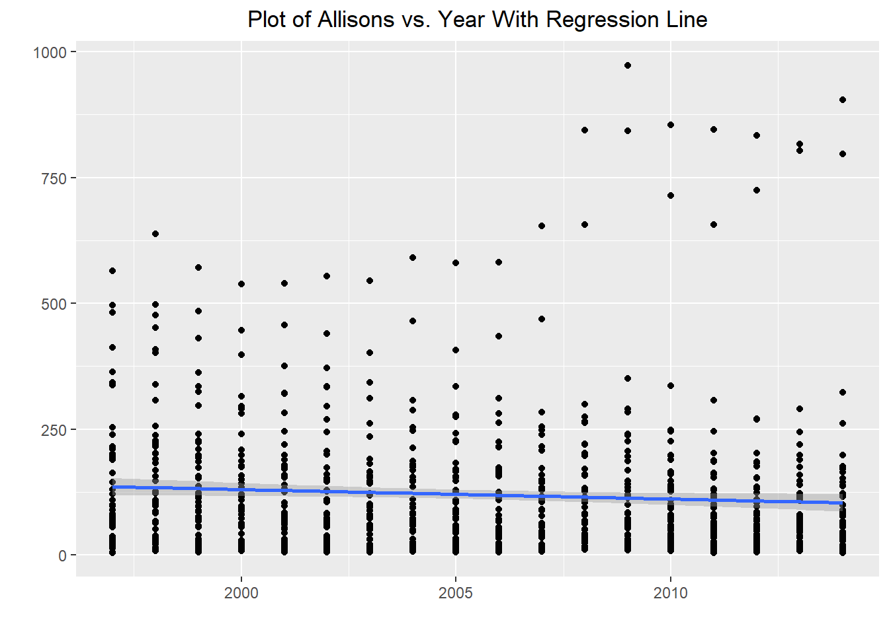

library(broom)
library(tidyverse)
A_names <- read_csv(here::here("supporting_artifacts", "Lab 9", "StateNames_A.csv"))Lab 9
Packages & Data
Summary and Visualization
Allison <- A_names |>
rename(Sex = Gender) |>
mutate(Count = replace_na(Count, 0)) |>
filter(Name == "Allison") |>
group_by(State, Year) |>
summarise(Count, Sex, .groups = "drop")
Allison <- Allison |>
filter(Sex == "F")
Allison |>
group_by(Year) |>
summarise(Count = sum(Count)) |>
ggplot(mapping = aes(x = Year, y = Count)) +
geom_point() +
geom_path() +
labs(x = "", y = "", title = "Number of Babies Names Allison by Year") +
theme(plot.title = element_text(hjust = 0.5))Modeling The Number of Allisons
ali_mod <- lm(Count ~ Year, data = Allison)
summary(ali_mod)
Call:
lm(formula = Count ~ Year, data = Allison)
Residuals:
Min 1Q Median 3Q Max
-131.08 -90.85 -43.67 40.92 859.51
Coefficients:
Estimate Std. Error t value Pr(>|t|)
(Intercept) 3894.3560 1765.7506 2.205 0.0277 *
Year -1.8820 0.8805 -2.137 0.0328 *
---
Signif. codes: 0 '***' 0.001 '**' 0.01 '*' 0.05 '.' 0.1 ' ' 1
Residual standard error: 138 on 911 degrees of freedom
Multiple R-squared: 0.00499, Adjusted R-squared: 0.003898
F-statistic: 4.569 on 1 and 911 DF, p-value: 0.03283Allison |>
ggplot(mapping = aes(x = Year, y = Count)) +
geom_point() +
stat_smooth(method = "lm") +
labs(x = "", y = "", title = "Plot of Allisons vs. Year With Regression Line") +
theme(plot.title = element_text(hjust = 0.5))`geom_smooth()` using formula 'y ~ x'
The estimated regression equation is “Allisons = 3894.36 - 1.882 * Year” This means the bigger year gets the fewer babies named Allison we expect.
Residuals in Allison Model
ali_mod |>
ggplot(mapping = aes(x = .resid)) +
geom_density() +
labs(x = "", y = "", title = "Density Plot of Residuals Predicting Count with Year") +
theme(plot.title = element_text(hjust = 0.5))From this model we can say that, in general, the name “Allison” has gotten less popular through the years, however, it appears that correlation is not extremely strong and varies from state to state.
Babies Named “Allen” “Allan” or “Alan”
Al_names <- data.frame(Name = c("Allan", "Alan", "Allen"), Sex = c("M", "M", "M"))
Allans <- A_names |>
rename(Sex = Gender) |>
semi_join(Al_names, by = c("Name", "Sex"))
Allans |>
group_by(Year, Name) |>
summarise(Count = sum(Count)) |>
ggplot(mapping = aes(x = Year, y = Count, color = Name)) +
geom_point() +
geom_path() +
labs(x = "", y = "", title = "Count of Allen's by Spelling and Year") +
theme(plot.title = element_text(hjust = 0.5), legend.position = "none") +
annotate("text", x = 2010, y = 3000, label = "Alan") +
annotate("text", x = 2010, y = 1100, label = "Allen") +
annotate("text", x = 2010, y = 550, label = "Allan") `summarise()` has grouped output by 'Year'. You can override using the
`.groups` argument.Spelling by State
states <- data.frame(State = c("PA", "CA"))
Allans |>
filter(Year == 2000) |>
semi_join(states, by = "State") |>
pivot_wider(names_from = Name,
values_from = Count) |>
group_by(State) |>
mutate(Allan = replace_na(Allan, 0),
Total = sum(Allen, Allan, Alan),
Alan = round(Alan/Total, 2),
Allen = round(Allen/Total, 2),
Allan = round(Allan /Total, 2))# A tibble: 2 × 7
# Groups: State [2]
Year Sex State Alan Allen Allan Total
<dbl> <chr> <chr> <dbl> <dbl> <dbl> <dbl>
1 2000 M CA 0.65 0.2 0.15 886
2 2000 M PA 0.43 0.47 0.1 119Unless the filtering was done wrong, all “Allens” born in California from this study were spelled “Allen” but about 18% of Pennsylvania “Allens” were spelled “Allan” making our friend a little less unique in his home state.